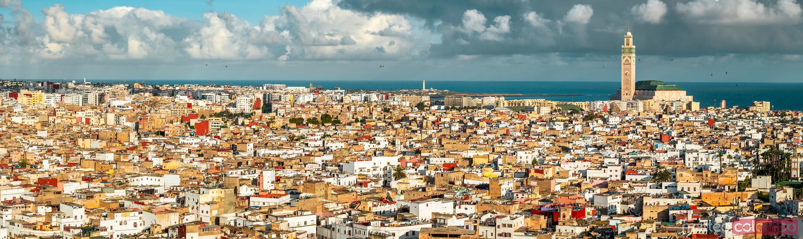

Aperçu sur l'histoire de Casablanca
Casablanca, la plus grande ville du Maroc, a une histoire dynamique qui reflète son évolution d'un modeste village à une métropole animée.
Initialement fondée par les Phéniciens au 7ème siècle sous le nom d'"Anfa," elle est devenue un port commercial stratégique au 7ème siècle.
Au XVème siècle, la ville a été fortifiée par les Portugais, qui l'ont nommée Casa Branca, ce qui signifie "Maison Blanche." Cependant, elle est restée relativement petite jusqu'au Protectorat français au début du XXème siècle, lorsque la ville a connu un développement urbain rapide et une modernisation.
Casablanca est devenue un centre économique principale, avec un mélange d'architecture moderne et traditionnelle, y compris la magnifique mosquée Hassan II, l'une des plus grandes mosquées du monde, mettant en valeur une superbe architecture mauresque.
Aujourd'hui, elle est connue pour sa culture vibrante et ses marchés animés, attirant les visiteurs désireux de découvrir à la fois ses racines historiques et la vie urbaine contemporaine.
Les principales attractions de Casablanca
Cliquez sur le bouton pour revenir en haut de la page.


{kind=link}
{kind=link}
{kind=link}
{kind=link}
{kind=link}